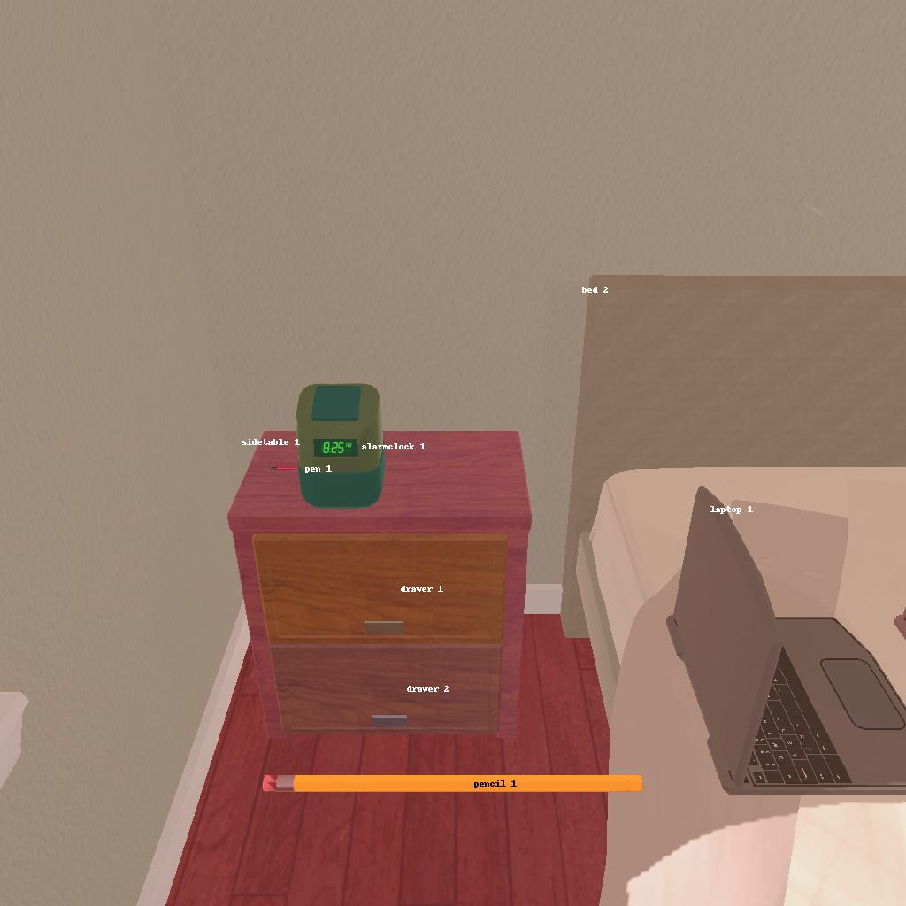

---------------------------------------------------------task: 2---------------------------------------------------------
--------------------------------------------------------------------------------------------------------------------------------------------------------------------
--------------------------------------------------------------------------------------------------------------------------------------------------------------------
Step:--------------------------------------------------------------------------7-------------------------------------------------------------------------------
----------------------------------------
VLM Prompt:
Image1:
Image2:
Image3:
**Instruction**
1. Analyze the provided image to identify all visible household objects, focusing on those relevant to the task description "examine the pen with the desklamp."
2. Use the analysis of the image and the task hint "The agent must find an object of the desired type, locate and turn on a light source with the desired object in-hand." to answer the question: what is the most reasonable action in the choices for the task description "examine the pen with the desklamp"?
4. Decide and write the answer using the template: The answer is: (i): , where i is the real number. If there is no desired object in the image, search every place based on **Initial Observation** to find the object. And if no one is exactly correct, choose a similar answer.
**Initial Observation**
You are in the middle of a room. Looking quickly around you, you can see bed (1-2), dresser (1), drawer (1-11), sidetable (1-2), desk (1), garbagecan (1), safe (1)
**Answer Choices**
(1): go to bed 1
(2): go to dresser 1
(3): go to bed 2
(4): go to drawer 1
(5): go to sidetable 2
(6): go to drawer 3
(7): go to drawer 4
(8): go to garbagecan 1
(9): go to drawer 5
(10): go to drawer 6
(11): go to drawer 7
(12): go to drawer 8
(13): go to drawer 9
(14): go to drawer 10
(15): go to drawer 11
(16): go to safe 1
(17): put pencil 1 in/on sidetable 1
(18): examine pencil 1
(19): examine sidetable 1
**Answer**
Let's think step by step by following the instructions.
----------------------------------------
----------------------------------------
Original Response:
First, we need to identify all visible household objects in the provided images. From the images, we can see:
Image1:
- desk 1
- bowl 1
- mug 1
- pencil 1
Image2:
- sidetable 1
- alarmclock 1
- pen 1
- drawer 1
- drawer 2
- bed 2
- laptop 1
Image3:
- sidetable 1
- alarmclock 1
- bed 2
- pencil 1
The task description is "examine the pen with the desklamp." We need to find a pen and a desklamp. In the provided images, we can see a pen in Image2, labeled as "pen 1." However, there is no desklamp visible in any of the images. Based on the task hint, we need to find a light source and turn it on with the pen in hand. Since there is no desklamp visible, we should search every place based on the Initial Observation to find the desklamp.
We have to choose the most reasonable action from the answer choices to accomplish the task. Since none of the options mention turning on a light source or directly interacting with a desklamp, we will have to choose an action that could lead us to find a desklamp.
The answer is: (5): go to sidetable 2. Sidetables often have lamps on them, and since we need to find and turn on a light source, this is the most reasonable action based on the given options and the Initial Observation.
----------------------------------------
----------------------------------------
>>> Refine Original VLM Response and Get Pure Action: go to sidetable 2
----------------------------------------
-----------------------------------------------------------------
Running time: 15.770195722579956 seconds
Total Money: 0.9508900000000001
-----------------------------------------------------------------
-----------------------------------------------------------------
Text Observation:You arrive at loc 6. On the sidetable 2, you see a pillow 1, a desklamp 1, a keychain 1, a pencil 2, and a creditcard 1.
-----------------------------------------------------------------
UNSUCCEED